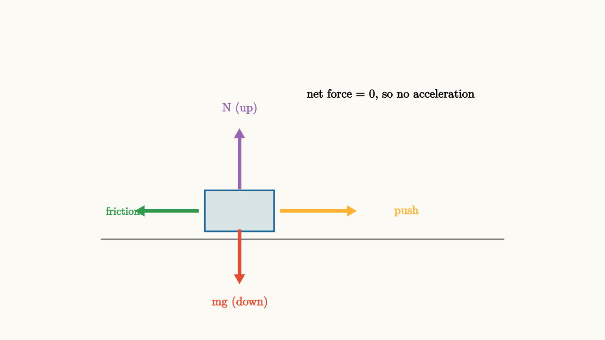
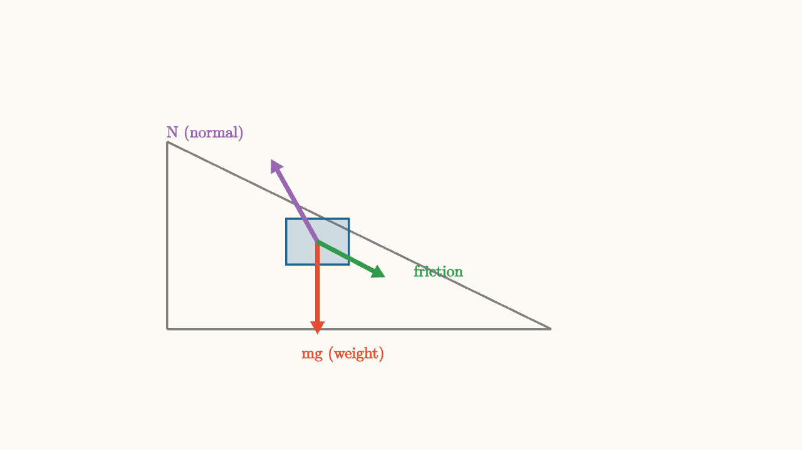

Newtons Laws Turn Forces Into Motion
Galileo ran an experiment in his head that changed everything.
Imagine a ball rolling down a ramp, then across a flat surface. If the flat surface is rough, the ball slows and stops. If you make the surface smoother, the ball travels farther before stopping. Make it smoother still, farther still. Now extrapolate: if the surface were perfectly smooth, with no friction at all, what happens?
The ball never stops. It rolls forever.
This thought experiment seems obvious today, but in Galileo's time it was revolutionary. The prevailing view, inherited from Aristotle, was that objects naturally come to rest unless something actively keeps them moving. A force was thought to be required to maintain motion.
Galileo's insight reversed this completely. Objects in motion tend to stay in motion. Rest is not the natural state. Constant velocity is the natural state. Forces are what change motion, not what sustain it.
Newton built mechanics on this foundation.
The First Law: Inertia
Newton's first law states that an object with no net force acting on it moves with constant velocity. That includes zero velocity, which means remaining at rest.
Read this carefully. The first law is not saying that forces are required to keep things moving. It says the opposite: without a net force, motion persists unchanged. A hockey puck on an ice rink glides in a straight line at constant speed not because something is pushing it forward, but because nothing is stopping it.
The word "net" is crucial. Many forces can act on an object at once. What matters is their vector sum. A book resting on a table has gravity pulling it down and the table pushing it up. Those forces cancel. The net force is zero. The book stays still. If you now add a sideways push from your hand, and friction opposes that push with equal force, the net horizontal force is still zero. The book stays still.
Inertia is the name for this resistance to change in velocity. A more massive object has more inertia. A bowling ball on a smooth floor is harder to start moving than a tennis ball. Once moving, the bowling ball is also harder to stop.

source
background = [0.985, 0.98, 0.955, 1]
camera = Camera(4.8b)
mesh diagram = block {
. stroke{GRAY, 1.5} Line(start: [-3.2, -1.1, 0], end: [3.2, -1.1, 0])
. fill{alpha{0.15} BLUE} stroke{BLUE, 2} center{[-1.0, -0.65, 0]} Rect([1.1, 0.65])
. color{PURPLE} Arrow(start: [-1.0, -0.3, 0], end: [-1.0, 0.65, 0])
. color{RED} Arrow(start: [-1.0, -0.95, 0], end: [-1.0, -1.8, 0])
. color{ORANGE} Arrow(start: [-0.35, -0.65, 0], end: [0.85, -0.65, 0])
. color{GREEN} Arrow(start: [-1.65, -0.65, 0], end: [-2.65, -0.65, 0])
. color{PURPLE} center{[-1.0, 0.98, 0]} Text("N (up)", 0.68)
. color{RED} center{[-1.0, -2.1, 0]} Text("mg (down)", 0.68)
. color{ORANGE} center{[1.65, -0.65, 0]} Text("push", 0.68)
. color{GREEN} center{[-2.85, -0.65, 0]} Text("friction", 0.62)
. color{BLACK} center{[1.4, 1.2, 0]} Text("net force = 0, so no acceleration", 0.68)
}
"balanced forces"
play Fade(0.6)Every arrow in this diagram pulls or pushes on the block. But if they all cancel, the block does not accelerate. It moves with constant velocity (or stays still if that was its velocity to begin with).
The Second Law: Force Causes Acceleration
When forces do not cancel, something changes. The second law says exactly what:
This is arguably the most important equation in all of classical physics. It tells you that acceleration is proportional to net force, and the constant of proportionality is mass.
Think about what this means. Force is a vector with both magnitude and direction. Acceleration is also a vector. The second law says they point in the same direction. Whatever direction the net force points, that is the direction the object accelerates.
Mass appears as the denominator when you solve for acceleration:
A larger mass requires more force to produce the same acceleration. A smaller mass accelerates more readily under the same force. This is the quantitative meaning of inertia.
Let's see this with a concrete example. Imagine a $3$ kg block on a frictionless surface. You push it with a horizontal force of $12$ N. The acceleration is $12/3 = 4 \text{ m/s}^2$ in the direction you pushed.
Now imagine pushing the same block with $12$ N while friction resists with $6$ N. Net force is $6$ N. Acceleration is $6/3 = 2 \text{ m/s}^2$.
Same push. Same block. Different friction. Different acceleration. The net force is what matters, not any individual force.
source
param force = 1.0
background = [0.985, 0.98, 0.955, 1]
camera = Camera(4.8b)
"vary the applied force"
mesh surface = stroke{GRAY, 1.5} Line(start: [-3.2, -1.0, 0], end: [3.2, -1.0, 0])
mesh block = fill{alpha{0.15} BLUE} stroke{BLUE, 2} center{[-0.8, -0.55, 0]} Rect([1.1, 0.65])
mesh push = color{ORANGE} Arrow(start: [-0.2, -0.55, 0], end: [-0.2 + $force, -0.55, 0])
mesh friction = color{GREEN} Arrow(start: [-1.35, -0.55, 0], end: [-2.05, -0.55, 0])
mesh net_label = color{BLUE} center{[0, 1.1, 0]} Text("larger force, larger acceleration", 0.7)
mesh accel_arrow = color{RED} Arrow(start: [-0.8, 0.18, 0], end: [-0.8 + 0.8 * $force - 0.35, 0.18, 0])
mesh accel_label = color{RED} center{[1.0, 0.72, 0]} Text("a = F/m", 0.7)
play Write(0.8)
"increase the push"
force = 2.2
play Lerp(1.2)
"net force determines acceleration"
block = fill{alpha{0.15} BLUE} stroke{BLUE, 2} center{[-0.8, -0.55, 0]} Rect([1.1, 0.65])
push = color{ORANGE} Arrow(start: [-0.2, -0.55, 0], end: [-0.2 + $force, -0.55, 0])
friction = color{GREEN} Arrow(start: [-1.35, -0.55, 0], end: [-2.05, -0.55, 0])
net_label = color{BLUE} center{[0, 1.1, 0]} Text("net force = push minus friction", 0.7)
play Lerp(0.8)Drawing Free-Body Diagrams
The second law requires you to know the net force. Finding the net force requires identifying every force acting on the object, then adding them as vectors. The tool for this is the free-body diagram.
Rules for a free-body diagram:
- Draw a point or simple shape representing the object
- Draw one arrow for each force acting on the object, showing both direction and relative magnitude
- Label each force clearly
- Do not include forces the object exerts on other things; only forces acting on this object
Let's work through a real scenario. A block rests on an inclined plane.

source
background = [0.985, 0.98, 0.955, 1]
camera = Camera(4.8b)
mesh diagram = block {
. stroke{GRAY, 2} Line(start: [-2.8, -1.25, 0], end: [1.8, -1.25, 0])
. stroke{GRAY, 2} Line(start: [-2.8, -1.25, 0], end: [-2.8, 1.0, 0])
. stroke{GRAY, 2} Line(start: [-2.8, 1.0, 0], end: [1.8, -1.25, 0])
. fill{alpha{0.2} BLUE} stroke{BLUE, 2} center{[-1.0, -0.2, 0]} Rect([0.75, 0.55])
. color{RED} Arrow(start: [-1.0, -0.2, 0], end: [-1.0, -1.3, 0])
. color{PURPLE} Arrow(start: [-1.0, -0.2, 0], end: [-1.55, 0.78, 0])
. color{GREEN} Arrow(start: [-1.0, -0.2, 0], end: [-0.2, -0.62, 0])
. color{RED} center{[-0.7, -1.55, 0]} Text("mg (weight)", 0.68)
. color{PURPLE} center{[-2.35, 1.1, 0]} Text("N (normal)", 0.68)
. color{GREEN} center{[0.45, -0.55, 0]} Text("friction", 0.68)
}
"block on incline"
play Fade(0.6)The weight arrow points straight down. The normal force points perpendicular to the incline surface. Friction points up the incline, opposing the tendency to slide.
If the block is in equilibrium (not accelerating), these three forces add to zero as vectors. The angle of the incline determines how much of gravity acts along the slope versus into the slope. This is why steeper inclines make it harder to hold something in place.
The Third Law: Pairs of Forces
Here is where many students get confused.
When you push against a wall, the wall pushes back against you. When Earth pulls the Moon gravitational toward it, the Moon pulls Earth gravitational toward it. Every force comes in a pair: action and reaction, always equal in magnitude, always opposite in direction.
But here is the critical detail that causes the confusion: the two forces in a Newton's third law pair always act on different objects.
The wall pushes on you. You push on the wall. These are two separate forces acting on two separate objects. When you draw your free-body diagram, only the wall's force on you appears. Your force on the wall belongs in the wall's free-body diagram.
This is why Newton's third law pairs do not cancel. Forces cancel in a free-body diagram when two forces act on the same object and point in opposite directions. Newton's third law forces act on different objects, so they live in different diagrams.
source
background = [0.985, 0.98, 0.955, 1]
camera = Camera(4.8b)
"collision pair"
mesh surface = stroke{GRAY, 1.5} Line(start: [-3.2, -1.1, 0], end: [3.2, -1.1, 0])
mesh ball1 = fill{alpha{0.2} BLUE} stroke{BLUE, 2} center{[-1.2, -0.5, 0]} Circle(0.45)
mesh ball2 = fill{alpha{0.2} ORANGE} stroke{ORANGE, 2} center{[1.2, -0.5, 0]} Circle(0.45)
mesh f12 = color{ORANGE} Arrow(start: [-0.72, -0.5, 0], end: [-0.05, -0.5, 0])
mesh f21 = color{BLUE} Arrow(start: [0.72, -0.5, 0], end: [0.05, -0.5, 0])
mesh lbl1 = color{ORANGE} center{[-1.2, 0.35, 0]} Text("force on blue (from orange)", 0.68)
mesh lbl2 = color{BLUE} center{[1.2, 0.35, 0]} Text("force on orange (from blue)", 0.68)
mesh lbl3 = color{BLACK} center{[0, 1.55, 0]} Text("equal magnitude, opposite direction, different objects", 0.68)
play Write(0.9)
"separate diagrams"
ball2 = fill{alpha{0.2} ORANGE} stroke{ORANGE, 2} center{[1.2, -0.5, 0]} Circle(0.45)
lbl3 = color{BLACK} center{[0, 1.55, 0]} Text("they act on different objects: no cancellation!", 0.68)
play Fade(0.6)Why does a small car crumple worse than a large truck in a collision? By Newton's third law, the force the truck exerts on the car equals the force the car exerts on the truck. The forces are the same. But the car has much less mass. Since $a = F/m$, the car experiences far more acceleration (and thus far more deformation) than the truck.
A More Complex Scenario: The Elevator
You are standing in an elevator on a scale. Let's trace through what happens as the elevator accelerates upward.
Your weight $mg$ pulls you down. The floor pushes you up with a normal force $N$. The net force is $N - mg$, and it equals $ma$ where $a$ is your upward acceleration.
So:
The scale reads $N$, which is greater than your weight $mg$ when the elevator accelerates upward. You feel heavier.
When the elevator accelerates downward (slowing at the top or speeding up going down):
The scale reads less than your weight. You feel lighter.
In free fall, $a = g$ downward, so $N = 0$. The scale reads zero. You are weightless.
This is not just an interesting puzzle. It is Newton's second law showing you that "feeling heavy" or "feeling light" is a matter of the normal force, which depends on acceleration, not just on your mass.
Why Forces Add as Vectors
The equation $\vec{F}_{\text{net}} = m\vec{a}$ treats force and acceleration as vectors. This means direction matters as much as magnitude. Two forces of equal magnitude can cancel (if opposite) or add (if parallel) or produce a diagonal result (if at an angle).
Consider a boat being rowed with force $F$ to the north, while a river current pushes it with force $F/2$ to the east. The net force is neither north nor east, but northeast, tilted more toward north. The boat accelerates in that diagonal direction. If you only track north-south and east-west separately, you can handle each component with the same $F = ma$ formula applied independently.
This component approach is one of the most powerful techniques in mechanics: decompose vectors into perpendicular components, apply Newton's second law in each direction separately, then reassemble. The inclined plane, the projectile, and the circular orbit all become manageable this way.
The Pattern That Unifies Everything
Here is the pattern underlying all three laws together:
When forces balance (net force zero), motion does not change. This is the first law.
When forces do not balance, motion changes in proportion to the imbalance and inversely to mass. This is the second law.
Every force you exert on something else comes with a return force on you. This is the third law.
Together, these laws form a complete grammar for mechanical interactions. You do not need more. Every problem in classical mechanics reduces to identifying the object, listing forces acting on it, adding those forces as vectors, and setting the sum equal to $m\vec{a}$.
The hard part is identifying forces correctly. Gravity, normal force, friction, tension, spring force, air resistance: each has its own character and direction rules. But the law that links them to motion is always the same second law.
When you find yourself confused in a mechanics problem, go back to the basics. Pick the object you care about. Draw every force acting on it (and only those forces). Add them as vectors. That sum is $m\vec{a}$. Everything else is algebra.